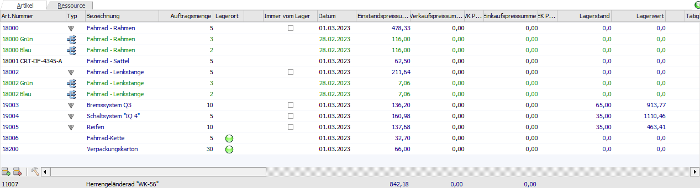
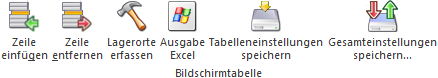
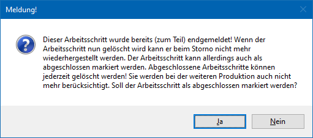
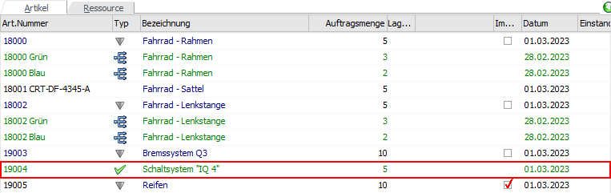

Im Register "Artikel" des Fensters Stückliste bearbeiten werden die Komponenten der Stückliste bzw. des Produktionsauftrags aufgeführt.
Weitere Vorgehensweise nach einer Korrektur
Nach der Korrektur der Stückliste sollte darauf geachtet werden, dass sich möglicherweise der Bedarf an Artikel geändert hat und einige davon nicht auf Lager liegen. Dieses kann über die Verfügbarkeitsliste geprüft werden.
Des Weiteren kann sich durch das Löschen bzw. Ergänzen von Produktionsartikel innerhalb der Stückliste die Tätigkeiten und somit auch Anzahl der benötigten Ressourcen geändert haben. Dieses kann über den Bereich Produktionsauftrag - Tätigkeiten einplanen kontrolliert und ggfs. neue Einplanungen vorgenommen werden.

In der Tabelle des Registers findet die eigentliche Korrektur des Produktionsauftrags bzw. der Handels- oder Fertigungsstückliste statt. Folgende Spalten stehen dabei zur Verfügung:
Ø Art.Nummer
An dieser Stelle wird die Artikelnummer der Komponente angezeigt. Handelt es sich um eine neue Zeile, dann kann in dieser Spalte die neue Artikelnummer hinterlegt werden.
Hinweis
Handelt es sich um einen Artikeln ohne Stückliste (Hauptartikel) und ohne Lagerortstruktur (Lagerorte), so ist es möglich den Inhalt einer bereits bestehenden Zeile zu überschreiben. Damit wird der bisherige Eintrag ersetzt.
Ø Typ
In dieser Spalte wird in Form eines Symbols der Typ der Komponente bzw. der Artikelzeile genauer beschrieben.
ü - normaler Artikel
Wenn es sich um einen
Artikel ohne Stückliste (Hauptartikel) handelt, dann wird an dieser Stelle kein
Symbol angezeigt.
ü - Stücklistenartikel
Dieses Symbol wird
dann angezeigt, wenn es sich bei der hinterlegten Komponente ebenfalls um einen
Stücklistenartikel handelt. In die Stückliste dieses Artikels kann per
Doppelklick auf dieses Icon gewechselt werden.
Achtung
Der Wechsel in neu hinterlegte Stücklistenartikel funktioniert erst nach Speicherung der Stückliste!
Hinweis
In die ursprüngliche Stückliste kann über den Button "Zurück" zurückgewechselt werden.
ü - gelöschte Komponente
Dieses Symbol
wird bei gelöschten Zeilen angezeigt. Diese Komponenten werden nach dem
Speichern der Stückliste endgültig entfernt.
ü  - Ausprägungsartikel
- Ausprägungsartikel
Dieses Symbol wird
bei Artikelzeilen angezeigt, welche über das Ausprägen eines Artikels entstanden
sind.
ü - teilendgemeldeter und gelöschter
Arbeitsschritt
Es handelt sich um ein teilendgemeldeten Arbeitsschritt
(Stückliste), welche gelöscht und während dieses Vorgangs als "erledigt /
abgeschlossen" gekennzeichnet wurde (Details siehe Tabellenbutton "Zeile
entfernen").
Ø Bezeichnung
Es wird die Bezeichnung des Artikels angezeigt. Dieser Text kann editiert werden, wenn es sich nicht um einen Ausprägungsartikel handelt.
Ø Auftragsmenge / Auftragsmenge 2
In dieser Spalte wird die benötigte Menge / Menge 2 angezeigt und kann angepasst bzw. bei neuen Zeilen hinterlegt werden. Handelt es sich um ein Halbfertigprodukt, so kann beim Editieren der Menge eine automatische Anpassung der Stücklistenkomponenten erfolgen (wenn gewünscht).
Hinweis - Ausprägungen
Beim Ausprägen wird abgeprüft, ob bereits eine Materialteilentnahme für den Ausprägungsartikel der Stückliste durchgeführt wurde. In dieses der Fall, dann ist das Ausprägen für den schon teilentnommenen Artikel nicht erlaubt. Die Mengenfelder für den Artikel und den Ausprägungsartikel sind inaktiv und die Menge kann nicht verändert werden.
Des Weiteren ist nicht möglich einen Artikel "teils" auszuprägen, z.B. 5 Stück vom Hauptartikel als Auftragsmenge mit einer Teilaufteilung von 3 Stück von einem Chargenartikel zu versehen. Wenn ein Artikel aber im Teilentnahme-Fenster ggfs. teilausgeprägt wurde (d.h. eine Teilentnahme mit einem Chargenartikel), so wird dieser Zustand nach der Teilentnahme entsprechend angezeigt (es kann aber nicht bearbeitet bzw. weiter ausgeprägt werden).
Ø Lagerort
In der Spalte "Lagerort" wird über den Status der Lagerorterfassung Auskunft gegeben:
ü  - Rot
- Rot
Die zu entnehmende Menge wurde
bisher nicht auf Lagerorte aufgeteilt.
ü - Orange
Ein Teil der zu entnehmende
Menge wurde nicht auf Lagerorte aufgeteilt.
ü - Grün
Die zu entnehmende Menge wurde
auf Lagerorte aufgeteilt.
ü  - Dunkelgrün
- Dunkelgrün
Es wurde auf einen Lagerort
mehr aufgeteilt, wie entnommen wird. Wenn die Aufteilung in solch einem Fall
über mehrere Orte stattgefunden hat, dann wird eine orange Kugel angezeigt.
Hinweis
Per Doppelklick auf das Kugel-Symbol kann das Fenster "Lagerorte erfassen" geöffnet werden.
Ø Immer vom Lager
Die Möglichkeit diese Checkbox zu aktivieren wird nur bei Stücklistenartikeln zur Verfügung gestellt. Durch Aktivierung dieser Checkbox kann entschieden werden, dass diese Artikel nicht produziert, sondern vom Lager genommen werden soll.
Hinweis
Diese Einstellung ist nur bei neu hinzugefügten Stücklistenartikeln möglich. Soll bei einem bereits im Auftrag hinterlegten Stücklistenartikel die Checkbox aktiviert werden, so muss dieser zunächst entfernt und anschließend neu hinterlegt werden.
Hinweis
Bei Arbeitsschritten die komplett abgeschlossen sind (z.B. eine Stücklisten-Unterebene, d.h. "Baugruppe", die vollständig endgemeldet wurde) wird diese Checkbox automatisch im aktivierten Zustand in der Tabelle angezeigt.
Ø Datum
In dieser Spalte wird das geplante Liefer- / Fertigungsdatum (Handelsstückliste bzw. Fertigungsstückliste) oder das Herstellungs- bzw. Fertigstellungsdatum (abhängig vom Produktionstyp des Produktionsauftrags) ausgewiesen.
Hinweis - Disposition
Eine Änderung + ein Abspeichern an dieser Stelle hat eine direkte Anpassung des Datums in der Disposition der Komponente zur Folge!
Hinweis - Produktionsartikel
Wenn das Datum bei selbst zu produzierenden Artikel (Halbfertigprodukte) geändert wird, dann gilt dieses als neues Produktionsdatum für die hinterlegten Tätigkeiten (siehe Kapitel Produktionsauftrag - Tätigkeiten einplanen). Voraussetzung hierfür ist allerdings, dass die Tätigkeiten zum Zeitpunkt der Änderung noch nicht verplant sind.
Ø Einstandspreissumme
In dieser Spalte wird die Summe des Einstandspreises (Einstandspreis x Menge) des Artikels angezeigt. Es handelt sich hierbei um ein reines Informationsfeld.
Ø Verkaufspreissumme
An dieser Stelle wird die Summe des Verkaufspreises (Einzelverkaufspreis der ausgewählten Preisliste x Menge) des Artikels angezeigt.
Hinweis
Wenn der Preis an dieser Stelle geändert wird, dann wird der Einzelverkaufspreis im Feld "VK-Preis" automatisch neu errechnet (Verkaufspreissumme / Menge).
Hinweis
Wenn in den FAKT-Parametern (Bereich "Belege - Stücklisten") die Option "Preisfindung" auf "2 - Preisfindung durchführend" eingestellt wurde, dann erfolgt die Berechnung der Verkaufspreissumme inklusive des hinterlegten Rabatts in den Spalten "Rabatt 1" und "Rabatt 2".
Ø Einkaufspreissumme
An dieser Stelle wird die Summe des Einkaufspreises (Einzeleinkaufspreis der ausgewählten Preisliste x Menge) des Artikels angezeigt.
Hinweis
Wenn der Preis an dieser Stelle geändert wird, dann wird der Einzeleinkaufspreis im Feld "EK-Preis" automatisch neu errechnet (Einkaufspreissumme / Menge).
Hinweis
Wenn in den FAKT-Parametern (Bereich "Belege - Stücklisten") die Option "Preisfindung" auf "2 - Preisfindung durchführend" eingestellt wurde, dann erfolgt die Berechnung der Einkaufspreissumme inklusive des hinterlegten Rabatts in den Spalten "Rabatt 1" und "Rabatt 2".
Ø Lagerstand
In dieser Spalte wird der aktuelle Lagerstand des Artikels ausgewiesen. Es handelt sich hierbei um ein reines Informationsfeld.
Ø Lagerwert
An dieser Stelle wird der aktuelle Lagerwert des Artikels ausgewiesen. Es handelt sich hierbei um ein reines Informationsfeld.
Ø Reservierungsstatus
An dieser Stelle wird in Form eines Symbols über den Status der Reservierung Auskunft gegeben, wenn die Reservierung in den FAKT-Parametern und bei der Komponente (Artikelstamm) aktiviert wurden.
ü - keine Reservierung
Dieses Symbol wird
angezeigt, wenn keine Reservierung vom Lager für diesen Auftrag bei der
Komponente vorhanden ist.
ü - Reservierung vorhanden
Dieses Symbol
wird angezeigt, wenn eine Reservierung vom Lager für diesen Auftrag bei der
Komponente vorhanden ist.
Hinweis
Die Reservierung kann über das Programm "Artikelreservierung bearbeiten" der WinLine FAKT oder das Fenster Produktion - Artikelreservierung bearbeiten der WinLine PPS individuell angepasst werden.
Ø Notiz
Per Doppelklick kann ein extra Fenster geöffnet werden, in welchem ein beliebig langer Text zu der Komponente, welcher auch Formatierungen enthalten darf, erfasst werden kann. Der Text dient dabei entweder als reine Informationen oder kann beispielsweise auf dem Arbeitsschein angedruckt werden.
Hinweis
Dieses Feld wird automatisch mit dem Inhalt des Felds "Notiz" aus dem Stücklistenstamm gefüllt.
Ø Lagerstandsunterschreitung
In dieser Spalte wird mit Hilfe des Symbols auf eine Unterschreitung des Lagerstands hingewiesen.
Ø Einstandspreis
An dieser Stelle wird der Einstandspreis des Artikels angezeigt. Es handelt sich hierbei um ein reines Informationsfeld.
Ø VK-Preis
In dieser Spalte wird der Einzelverkaufspreis (der ausgewählten Preisliste) des Artikels angezeigt.
Hinweis
Wenn der Preis an dieser Stelle geändert wird, dann wird die Summe des Verkaufspreises im Feld "Verkaufspreissumme" automatisch neu errechnet (Einzelverkaufspreis x Menge).
Achtung
Wenn der Preis bei einer Komponente manuell editiert wird und die Option "3 - Einzelzeilen-Preisfindung" der FAKT-Parameter (Bereich "Belege - Stücklisten" - Feld "Preisfindung") gesetzt ist, so wird der Preis in der Zeile bis zu einer eventuellen weiteren manuellen Änderung fixiert. Dieser Zustand wird mit dem Symbol gekennzeichnet. In diesem Fall bleibt der manuell editierte Preis erhalten, auch wenn die Preiseliste der "Preisbasis Verkauf" gewechselt wird.
Ø EK-Preis
An dieser Stelle wird der Einzeleinkaufspreis (der ausgewählten Preisliste) des Artikels angezeigt.
Hinweis
Wenn der Preis an dieser Stelle geändert wird, dann wird die Summe des Einkaufspreises im Feld "Einkaufspreissumme" automatisch neu errechnet (Einzeleinkaufspreis x Menge).
Achtung
Wenn der Preis bei einer Komponente manuell editiert wird und die Option "3 - Einzelzeilen-Preisfindung" der FAKT-Parameter (Bereich "Belege - Stücklisten" - Feld "Preisfindung") gesetzt ist, so wird der Preis in der Zeile bis zu einer eventuellen weiteren manuellen Änderung fixiert. Dieser Zustand wird mit dem Symbol gekennzeichnet. In diesem Fall bleibt der manuell editierte Preis erhalten, auch wenn die Preiseliste der "Preisbasis Einkauf" gewechselt wird.
Ø Ausprägungspoolnummer
Wenn mit Ausprägungspools gearbeitet wird, dann ist an dieser Stelle eine Eingabe möglich (nähere Informationen siehe Kapitel Ausprägungspool).
Ø Ausprägung 1 / Ausprägung 2 (hier Größe / Ort" und "Farbe")
Handelt es sich um einen Ausprägungsartikel, so wird in diesen Spalten die Ausprägung 1 und 2 (jeweils Kennzahl mit Bezeichnung) der gewählten Ausprägung angezeigt.
Ø Chargennummer
Handelt es sich bei der Komponente um einen Artikel, welcher mit Ident- oder Chargennummer geführt wird, dann wird diese hier angezeigt.
Ø Rabatt 1
An dieser Stelle wird der Rabatt 1 (der ausgewählten Preisliste) des Artikels angezeigt.
Hinweis
Diese Spalte steht nur zur Verfügung, wenn in den FAKT-Parametern (Bereich " Belege - Stücklisten") die Option "Preisfindung" auf "2 - Preisfindung durchführend" oder "3 - Einzelzeilen-Preisfindung" gestellt wurde.
Ø Rabatt 2
An dieser Stelle wird der Rabatt 2 (der ausgewählten Preisliste) des Artikels angezeigt.
Hinweis
Diese Spalte steht nur zur Verfügung, wenn in den FAKT-Parametern (Bereich " Belege - Stücklisten") die Option "Preisfindung" auf "2 - Preisfindung durchführend" oder "3 - Einzelzeilen-Preisfindung" gestellt wurde.
Ø Textübernahme
Wenn die Bezeichnung des Produktionsartikel durch eine Komponente automatisch ergänzt wurde, dann wird auf dieses in Form eines Pfeils hingewiesen.
Hinweis
Nähere Informationen bzw. Voraussetzung zu diesem Thema entnehmen Sie bitte dem Kapitel Stückliste - Register "Stamm" (Spalte "Übernahme in Bezeichnung").
Ø Artikel automatisch ersetzt
In dieser Spalte wird das Symbol angezeigt, wenn diese Komponente automatisch vom Programm eingefügt wurde und dadurch eine andere ersetzt hat (nähere Informationen siehe Kapitel Stücklisten - Ersatznummern).
Ø Bewertungspreissumme
In dieser Spalte wird die Summe des Bewertungspreises (Bewertungspreis x Menge) des Artikels angezeigt. Es handelt sich hierbei um ein reines Informationsfeld.
Ø Bewertungspreis
An dieser Stelle wird der Bewertungspreis des Artikels angezeigt. Es handelt sich hierbei um ein reines Informationsfeld.
Hinweis
Der Bewertungspreis ergibt sich aus der im Artikelstamm (WinLine FAKT - Stammdaten - Artikelstamm - Artikel - Register "Lager" - Option "Basis für Rohertrag") hinterlegten Basis für die Rohertragsermittlung.
Ø Kategorie
Hier wird die Kategorie gemäß Stücklistenstamm dargestellt.
Ø Kategoriename
Wenn eine Kategorie hinterlegt wurde, so wird hier der entsprechende Name ausgewiesen.
Ø Artikelstatus
In dieser Spalte wird der Artikelstatus gemäß Stücklistenstamm ausgewiesen.
Ø Artikelstatus Hinweis
An dieser Stelle wird der Name des ausgewählten Artikelstatus ausgewiesen, wobei dieser pro Komponente individuell angepasst werden kann.
Ø Artikelstatus Info
Hier wird das Icon des gewählten Artikelstatus angezeigt.
Ø Version
Handelt es sich um einen Stücklistenartikel, so wird in dieser Spalte die Version gemäß Stücklistenstamm dargestellt.
Ø Herkunft
Mit Hilfe des Arbeitsschritte zusammenfassen können Arbeitsschritte aus Produktionsaufträgen herausgelöst und in einen neuen Auftrag zusammengefasst werden. Handelt es sich bei der aktuellen Komponenten-Zeile um solch einen Stücklistenartikel, so wird in dieser Spalte die Auftragsnummer des neuen Produktionsauftrags angezeigt.
Ø Positionsnummer
An dieser Stelle kann die individuelle Positionsnummer der Komponente verändert werden (weitere Details zu dem Thema "Positionsnummern / Positionstext" entnehmen Sie bitte dem Stücklistenstamm).
Hinweis
Handelt es sich um ein Halbfertigprodukt, so hat eine Änderung bzw. Hinterlegung der Positionsnummer keine Auswirkung auf den Positionstext der darunterliegenden Stücklistenebenen.
Ø Positionstext
Mit Hilfe des Positionstextes kann innerhalb einer mehrstufigen Stückliste durch Vererbung eine Nummernstruktur geschaffen werden. An dieser Stelle ist eine manuelle Änderung des Textes möglich (weitere Details zu dem Thema "Positionsnummern / Positionstext" entnehmen Sie bitte dem Stücklistenstamm).
Weitere Buttons / Einstellungen
Ø Detailinfo anzeigen/ausblenden
Im oberen rechten Bereich der Komponententabelle kann mit diesen Buttons ein Info-Bereich für die ausgewählte Komponente angezeigt bzw. ausgeblendet werden.
Tabellenbuttons

Ø Zeile einfügen
Durch Anklicken dieses Buttons kann oberhalb der aktiven Komponente eine weitere Komponente eingefügt werden.
Ø Zeile entfernen
Durch Anklicken dieses Buttons wird die aktive Komponente mit einem Löschsymbol versehen (siehe Spalte "Typ") und die Zeile rot markiert. Nach dem Speichern der Stückliste wird die Artikelzeile endgültig entfernt.
Hinweis
Wenn die selektierte Zeile in der Tabelle eine Stückliste ist, so kann es sein, dass eine Endmeldung bzw. Teilendmeldung für den Arbeitsschritt schon durchgeführt wurde. Wenn der Arbeitsschritt abgeschlossen ist (d.h. vollständig endgemeldet wurde), wird der Button auf inaktiv gesetzt und der Arbeitsschritt kann nicht entfernt werden.
Wenn der Arbeitsschritt hingegen nur teilendgemeldet wurde, so ist der Button aktiv und der Arbeitsschritt kann entfernt werden. Man erhält dabei die allerdings folgende Hinweismeldung:

Wird die Meldung mit "Ja" bestätigt, gilt der Arbeitsschritt als "abgeschlossen". Die Zeile in der Tabelle wird dementsprechend als abgeschlossen gekennzeichnet:

Damit wird der Arbeitsschritt nicht mehr bei der Endmeldung bzw. im Materialentnahmeschein/Arbeitsschein berücksichtigt. Der Arbeitsschritt (und dessen Bestandteile) bekommt nach dem Speichern der Stücklisten-Einstellungen eine Restmenge und Auftragsmenge = 0. Die schon erfolgte Teilendmeldung für den entfernten Arbeitsschritt kann im Fenster "Arbeitsschritte stornieren" storniert werden, wobei der abgeschlossene Arbeitsschritt wieder zum Produktionsauftrag mit der gleichen Auftragsmenge wie bei der Teilendmeldung hinzufügt wird.
Wird die Meldung mit "Nein" bestätigt, so wird der Arbeitsschritt mit dem Löschsymbol gekennzeichnet. Nach dem Speichern der Stücklistenänderungen wird die Artikelzeile endgültig entfernt. Die schon erfolgte Teilendmeldung für den entfernten Arbeitsschritt kann zwar im Fenster "Arbeitsschritte stornieren" storniert werden, aber der (nicht abgeschlossene) Arbeitsschritt kann nicht mehr zum Produktionsauftrag hinzufügt werden. Es werden lediglich die Lagerbuchungen für die Teilendmeldung storniert.
Ø Lagerorte erfassen
Durch Anwahl des Buttons "Lagerorte erfassen" wird das Fenster "Lagerorte erfassen" geöffnet.
Ø Ausgabe Excel
Durch Anwahl des Buttons "Ausgabe Excel" wird der Inhalt der Tabelle an Microsoft Excel übergeben.
Ø Tabelleneinstellungen speichern
Die Spalten einer Tabelle können grundsätzlich an beliebige Positionen verschoben, bzw. in der Breite entsprechend angepasst werden. Durch Anwahl des Buttons "Tabelleneinstellungen speichern" werden die Einstellungen benutzerspezifisch gespeichert und bei dem nächsten Aufruf des Programmpunktes wieder vorgeschlagen.
Ø Gesamteinstellungen speichern…
Im Gegensatz zu "Tabelleneinstellungen speichern" können mit "Gesamteinstellungen speichern" mehrere Tabellenaufbauten gespeichert und nach Wunsch geladen werden. Zusätzlich werden Sonderfunktionen der Tabelle (z.B. "Spalte gruppieren") ebenfalls bei der Speicherung bedacht.